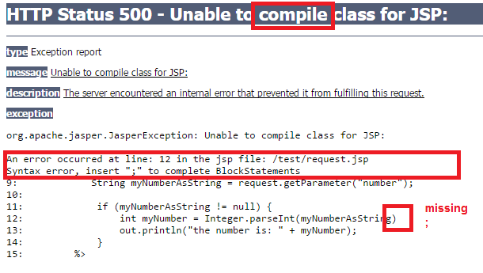
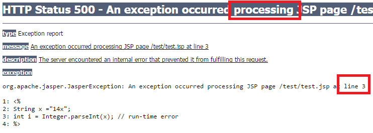

Lecture - Errors
- 20 minutes
- Learning Objectives
- Learn why error handling is important
- Learn major classes of errors
- Learn try catch blocks
All Programmers Make Errors
Even the very best programmers write programs with errors. Part of what makes a programmer great is the ability to quickly find, fix, prevent, and gracefully handle errors.
Some interesting facts about programming errors from the Internet:
- Estimated that 50-90% of programmers’ time is spent debugging code
- A typical programmer write 70 bugs per 1,000 lines of code
- Fixing a bug takes 30 times longer than writing a line of code
So if you have already encountered some level of frustration with errors, you’re not alone!
If we can get better at dealing with them, we can spend more of our time dreaming up new ideas and writing the code to bring them into life.
Major Error Classes: Syntax Error
The easiest type of error to describe is a syntax error. This is usually the result of a typo, incorrect capitalization, or missing semicolon.
For example, take a look at this code:
// this line is fine
String x = "test";
// this line is not okay, string should be String
string x = "test";
// these lines are not okay, missing ;
out.println("test")
out.println("test2")
If you’re fortunate, you’ll have an error display that will give you the error and a line number to track the exact origin of the error.

Each of these syntax errors will stop Java during any compilation of the code. Compilation means that Java is trying to turn your code into a working executable file. There can’t be a single syntax error for successful compilation.
As we progress in this course, we will eventually stop using a simple text editor and move-into a development environment that can assist with highlighting syntax errors.
Challenge Question
Why doesn’t a HTML error cause a page crash, but a Java error will?
For example, why doesn’t this code crash a page?
<!doctype html>
<html>
<head></head>
<body>
<p>I have no closing tag
</body>
</html>
The answer is that HTML is not a compiled language, in fact, it’s not even a programming language. HTML is a protocol: a standard language to transfer information over the Internet. But, HTML is not compiled into an executable “program” to run on your computer. It is processed by a web browser for display.
Java, on the other hand, is a compiled language. Java programs are compiled into byte-code, which is a platform independent version of machine code. The target machine is the Java Virtual Machine, and not the underlying architecture.
Major Error Classes: Logical or Semantic Errors
A logical error can take on many forms, but basically your code may run without a compile error, yet still fail to produce the intended result.
For example,
if (weather=="dry") {boolean putOnRaincoat = true;} // should be false;
or
// calculating 3 pieces of pizza for 10 people plus 5 backup slices
int totalPizzaSlices = 30 * 10 + 5; //should be 3 * 10 + 5, or even better (3*10)+5
These errors can be extremely difficult to find because nothing breaks! Your program will just quietly produce incorrect results.
The best ways to manage these errors:
* Review your code thoroughly
* Test your code with many ‘cases!’ When we did the money change lab, we tried several different cases at the end to see how our code would run.
Major Error Classes: Run-time Errors
Run-time errors, by definition, occur while the program is being used (execution), and not when the program is built (compilation).
Often times, run-time errors occur because of the unexpected. Bad user data and suddenly missing or corrupt file are examples of potential causes.
String x = "14";
int i = Integer.parseInt(x); // should be fine
//what if x somehow became set to something non-numeric?
String x ="14x";
int i = Integer.parseInt(x); // run-time error

We can locate and gracefully handle run-time errors using error-catching syntax called try-catch blocks.
Try-Catch Blocks
In many programming languages, we can use the concept of a try-catch block to attempt some lines of code. If the code does create an error, we will have the program jump down to a new section of code, the catch block, to identify the error and figure out what to do next.
try {
String x = "14x";
int i = Integer.parseInt(x); // run-time error
out.println("this won't print, the program will jump down to the catch block");
} catch (Exception e) {
out.println("ERROR!!!!" + "<br>");
out.println(e.getMessage());
}
You may also use a try-catch-finally block if you need to ensure some code runs at the end of your block, whether an error occurs or not. Opening a file, and then making sure that you close it, is a good example.
1. Use the code below, play with the variable x. Set it to “14” and then back to “14x”. See how the page runs.
<!doctype html>
<html>
<head><title>Errors</title></head>
<body>
<%
try {
String x = "14x";
int i = Integer.parseInt(x); // run-time error
out.println("this won't print, the program will jump down to the catch block");
} catch (Exception e) {
out.println("ERROR!!!!" + "<br>");
out.println(e.getMessage());
} finally {
out.println("this prints whether there is an error or not");
}
%>
</body>
</html>
That’s all for this lecture, see you in the lab!